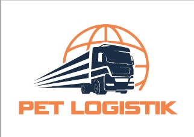

Пет-Логистик ДооелСигурен партнер за шпедиција и логистика
Контактирајте неПЕТ-ЛОГИСТИК ДООЕЛ е водечка компанија во шпедицијата и логистиката во Македонија. Со преку 10 години искуство, нудиме сигурни, брзи и професионални услуги за увоз, извоз и транзит на стоки.
„Нашите клиенти редовно ни велат дека нашата услуга е брза, професионална и доверлива. Ние се гордееме со тоа што сме најдобар избор за шпедиција во Македонија!“
Сигурно и брзо царинење за увоз и извоз на стоки, со точна документација.
Професионално управување со привремени увози, со минимални трошоци.
Подготовка на сите потребни транзитни документи за безгрижно движење на стоките.
Стручни совети и консалтинг за сите царински процеси и постапки.
Професионално застапување и претставување на вашата компанија пред царинските органи.
Ефикасни и поедноставени процеси за брзо и сигурно поминување на стоката.
Сигурен и ефикасен транспорт на вашите стоки до било која локација.
Контактирајте нè за професионална и сигурна услуга.
📍 Адреса: Граничен Премин Табановце
📞 Телефон: 078/599-599
📞 Телефон: 075/468-603
📍 Адреса: Царински Терминал
📞 Телефон: 078/599-599
📞 Телефон: 075/468-603